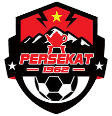

Persekat didirikan pada 16 Agustus 1962 sebagai representasi sepak bola Kabupaten Tegal. Selama puluhan tahun, tim yang dijuluki Laskar Ki Gede Sebayu ini lebih banyak menghabiskan waktunya berkompetisi di level amatir regional Jawa Tengah. Nama julukannya sendiri diambil dari sosok tokoh pendiri Tegal, yang mencerminkan semangat juang masyarakat setempat di lapangan hijau. Titik balik bersejarah bagi klub ini terjadi pada musim 2019. Setelah perjuangan panjang di Liga 3, Persekat berhasil menembus babak 8 besar nasional yang sekaligus memastikan tiket promosi ke Liga 2 untuk pertama kalinya dalam sejarah klub. Keberhasilan ini mengubah status Persekat dari klub perserikatan daerah menjadi klub profesional di bawah naungan PT Persekat Tegal Sejahtera. Sejak saat itu, Persekat yang bermarkas di Stadion Tri Sanja, Slawi, menjadi kekuatan baru yang kompetitif di kasta kedua sepak bola Indonesia. Dengan dukungan fanatik dari suporter seperti Skaterz, mereka bertransformasi dari tim kecil menjadi salah satu identitas kebanggaan yang diperhitungkan di kancah nasional.
Membangun Kejayaan Sepak Bola Tegal yang Berkelanjutan Persekat Tegal memiliki komitmen yang kuat untuk tidak hanya menjadi kontestan pelengkap di liga profesional, tetapi juga menjadi pusat pengembangan talenta sepak bola yang unggul di Jawa Tengah. Visi utama klub adalah menciptakan ekosistem sepak bola yang modern dengan mengintegrasikan manajemen profesional, infrastruktur yang mumpuni, dan pembinaan pemain muda yang terstruktur melalui akademi yang solid. Misi ini dijalankan dengan semangat gotong royong, di mana keberhasilan tim di lapangan diharapkan mampu meningkatkan ekonomi lokal serta mempererat persatuan masyarakat Kabupaten Tegal, sehingga Persekat dapat terus eksis sebagai klub yang sehat secara finansial dan prestasi dalam jangka panjang
Simbol Identitas dan Semangat Juang Laskar Ki Gede Sebayu Setiap elemen grafis dalam logo Persekat menyimpan makna mendalam yang merepresentasikan nilai-nilai luhur dan kekayaan budaya Kabupaten Tegal. Penggunaan siluet teko dan pegunungan menggambarkan identitas geografis serta budaya minum teh (moci) yang sangat melekat dengan keramahan masyarakat Tegal, sementara warna merah yang dominan melambangkan keberanian dan energi pantang menyerah dalam menghadapi lawan di setiap pertandingan. Bintang di bagian atas melambangkan cita-cita klub untuk mencapai puncak tertinggi sepak bola Indonesia, dan perisai yang membingkai seluruh elemen tersebut adalah simbol perlindungan serta persatuan antara manajemen, pemain, dan suporter yang harus selalu searah dalam membela kehormatan daerah.